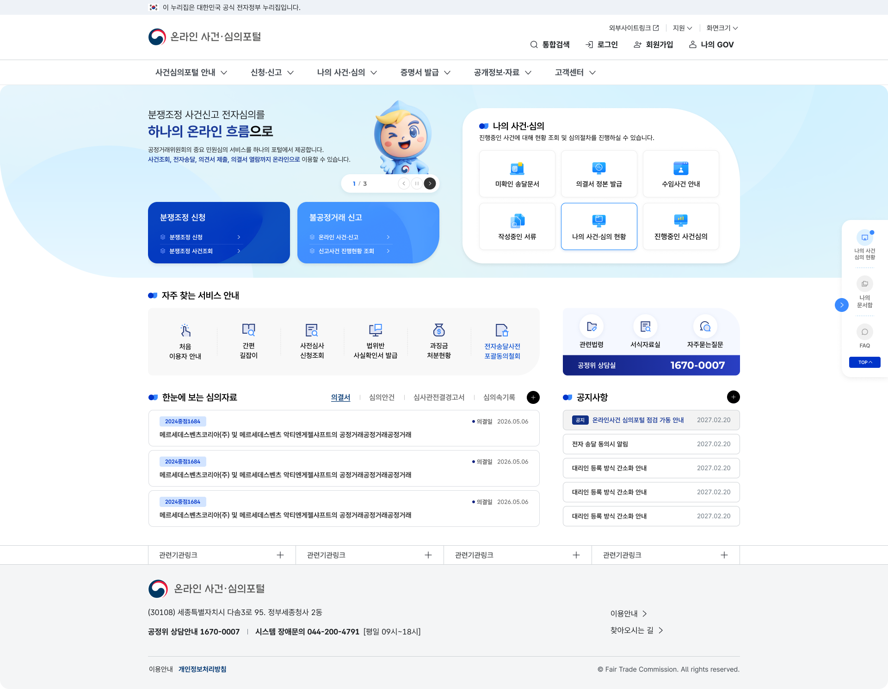
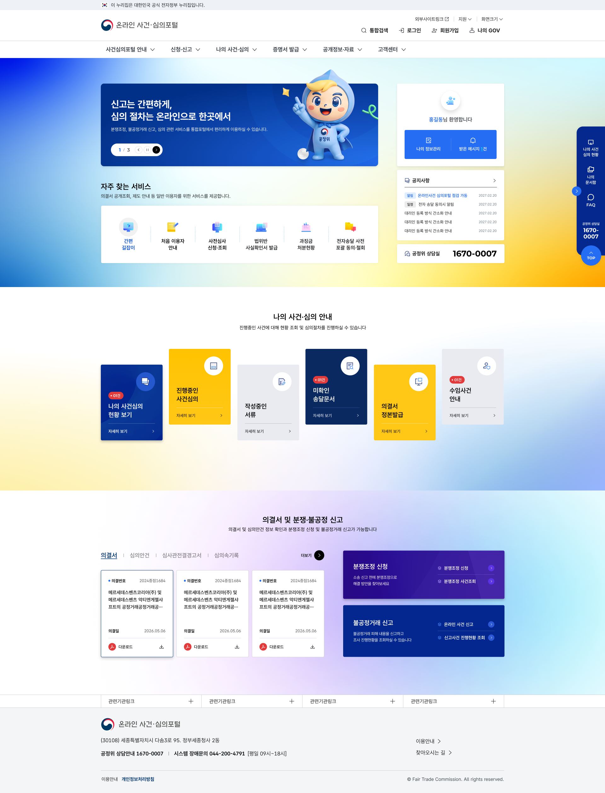
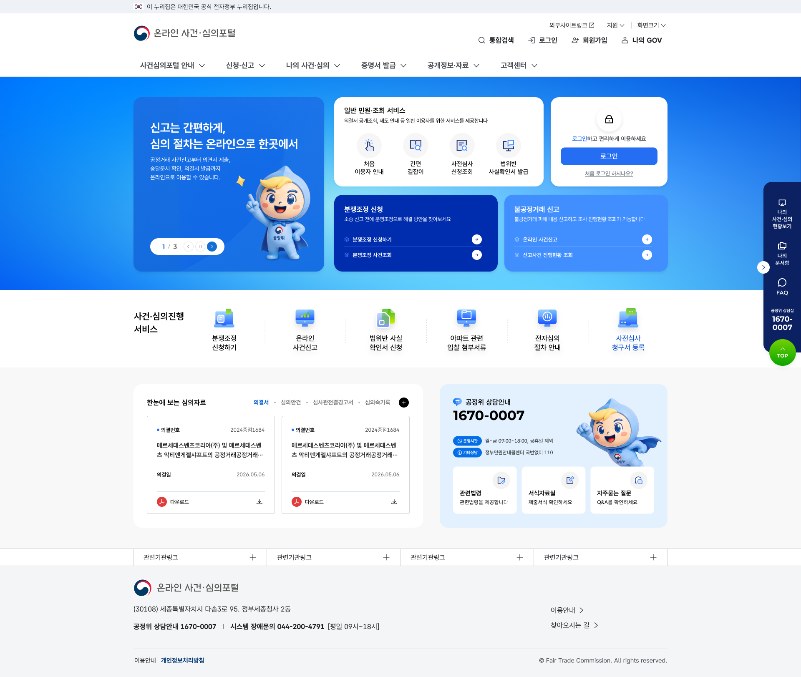
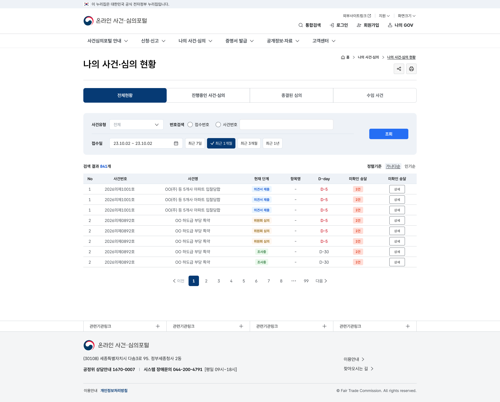

design proposal
공정거래위원회 온라인사건·심의포털 고도화 디자인
발표일 : 2026. 06. 12
Main Design Alternatives
공정거래위원회 온라인사건·심의포털 고도화 프로젝트의 핵심 UX/UI 방향성을 담은 세 가지 메인 시안입니다.

직관적 서비스중심 UI
분쟁조정·신고·심의의 실제 업무 흐름을 동선에 반영한 서비스 중심 UI
컨셉서 및 풀 이미지 보기

콘텐츠 몰입형 와이드카드 UI
와이드 카드와 호버 인터랙션으로 콘텐츠 몰입도를 높인 UI
컨셉서 및 풀 이미지 보기

안정형 공공포털 벤토그리드 UI
벤토그리드로 정보를 영역별로 안정적으로 집약한 공공포털형 UI
컨셉서 및 풀 이미지 보기
Sub Design (Common)
각 대안의 내부 입력 및 출력 모듈의 표준이 되는 공통 레이아웃 시안입니다.

COMMON UTILITY
KRDS 기반 서브페이지 UI
정부 디자인 시스템(KRDS) 기준에 따라 검색·조회·목록·상세 화면을 표준화하고, 진행 단계별 상태 배지로 사건 현황을 직관적으로 보여주는 공통 서브페이지 UI입니다.
공통 시안 확인